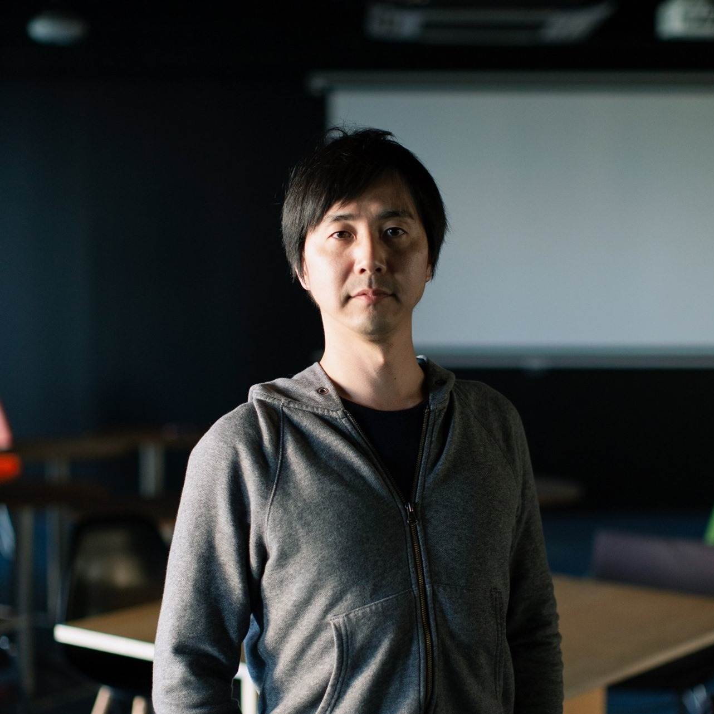
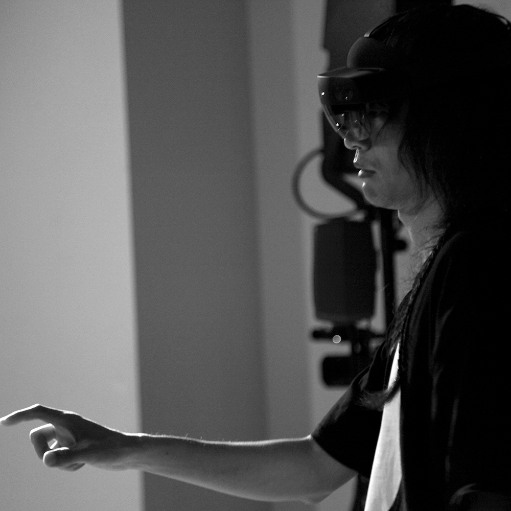

Performer
Ai.step

人間と機械学習に基づくAIが共に演奏及び映像生成を行ない、パフォーマンスを通して人間とAIの間の相互補完によって生まれる可能性を探究する。
Yugo Minomo

放送技術者。大学院を出て一度は就職したものの、リスキリングの衝動に駆られて40歳手前にしてIAMASに入学。NxPC.Labの活動に出会ってオーディオビジュアルの活動を開始。2児の父。
KxS

演奏家・木村佳とビジュアルデザイナー・柴田一秀によるパフォーマンスユニット。 視覚表現と聴覚表現の相互補完的な在り方を追求したパフォーマンスを行い、演奏体験の拡張を目指す。
fussy

XRを用いた表現システムである「Avatar Jockey」を開発し、様々な現場で使用実験しながら複合現実空間におけるオーディオビジュアル表現の可能性を研究している。
electric catfish
BravenとSantaが電磁波を愛でます。
hitsujikai
地球を征服します。ひつじかい。
税金操作
大雨の中、高速道路で時速170kmの車に轢かれた配達員を発見しました。